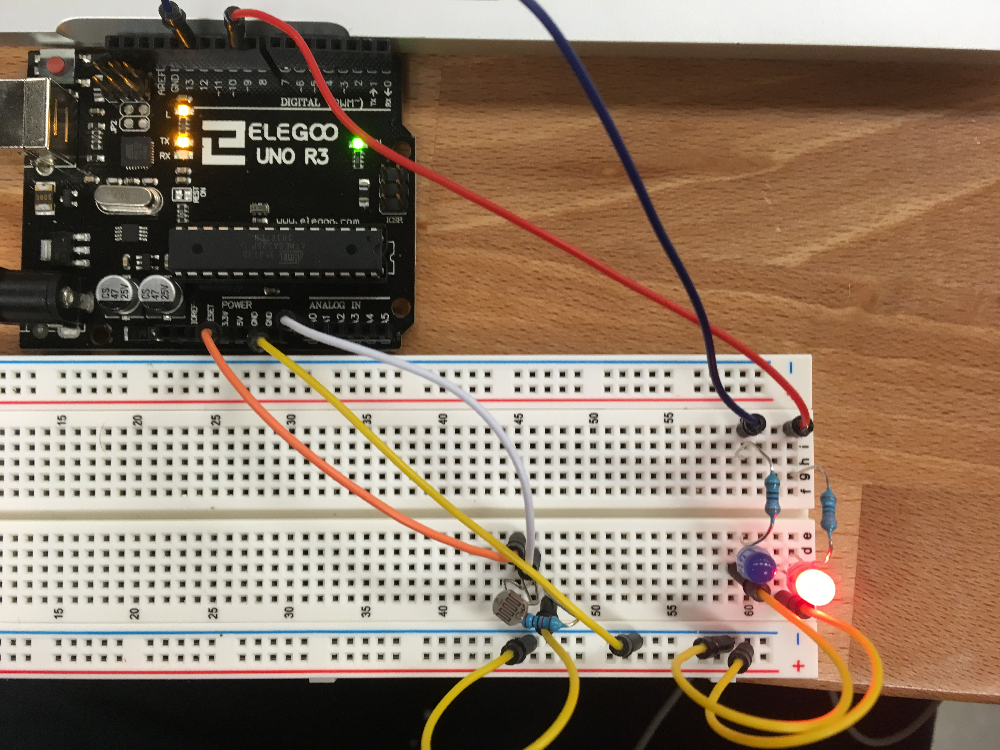
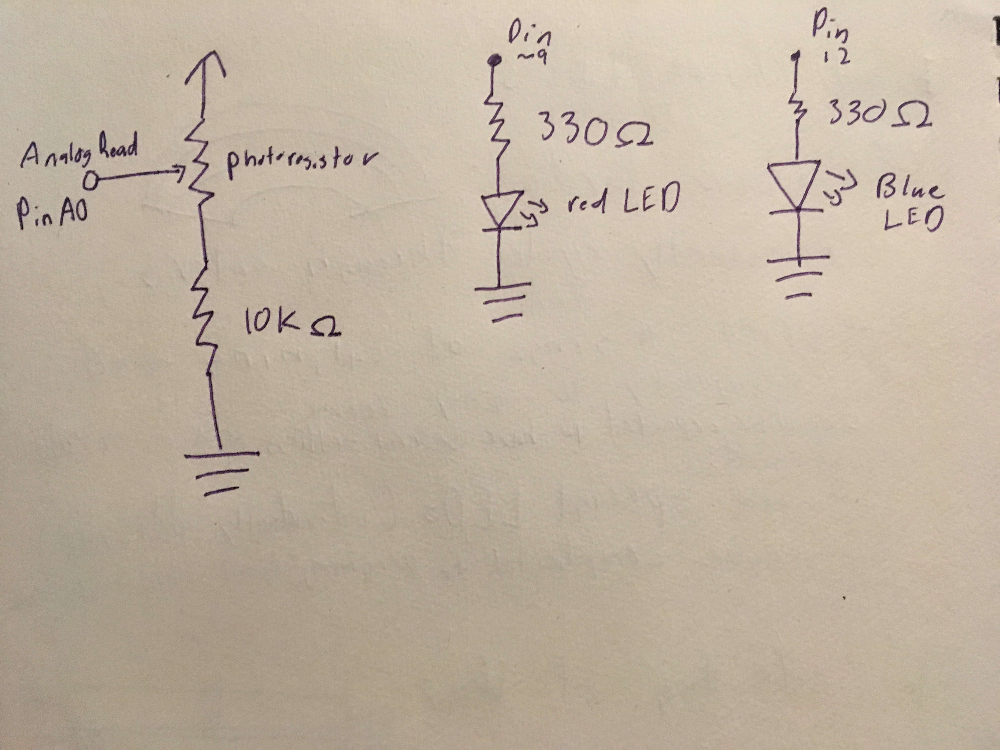
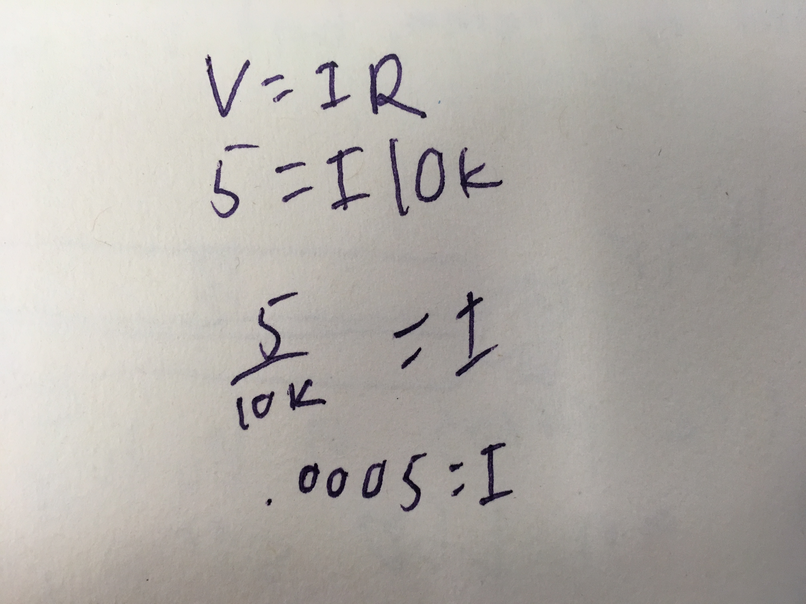

Tre's Assignment 1! Photoresistor Input

To test the analog input and output aspects of arduino, I made a circuit that changes based on how much light is in the room.
Circuitry and Schematics
Here is what my breadboard and Arduino looked like at the end of my project.
 To utilize a voltage divider in my circuit, I connected a photoresistor to a power source and an analog pin, which read the light levels. I used very high resistance, 10K Ohms, to make sure that the overall current was always low.
The analog pin read light brightness values which ranges from around 600 (though it technically could be 0) to 1023, from very low to very high brightness. The red LED changes its light output, a value between 0 and 255, based on the light brightness value. These values are output to the serial monitor as well.
Code and Final Operation
The code for this project switches between 3 modes based on brightness:
- If there is a "normal" amount of light, the red analog LED is on and changes depending how much light there is
- If there is little/no light, the red LED turns off and a regular blue LED turns on
- If there is a lot of bright light, both LEDs will turn off completely
// This code uses a photoresistor to change analog input/output to determine whether to turn some LEDs brightness up, down, or off.
// These constants won't change. They're used to give names to the pins used:
const int analogInPin = A0; // Analog input pin that the potentiometer is attached to
const int analogOutPin9 = 9; // Analog output pin that the red LED is attached to
const int digitalPin12 = 12; // Analog output pin that the blue LED is attached to
int sensorValue = 0; // value read from the pot
int outputValue = 0; // value output to the PWM (analog out)
void setup()
{
// initialize serial communications at 9600 bps:
Serial.begin(9600);
// initialize the blue LED to output
pinMode(digitalPin12, OUTPUT);
}
void loop()
{
// read the analog in value:
sensorValue = analogRead(analogInPin);
// map it to the range of the analog out:
outputValue = map(sensorValue, 0, 1023, 0, 255);
// change the analog out value:
// analogWrite(analogOutPin, outputValue);
// if/else statement decides which lights turn on/off
if (sensorValue < 650) // If there is little/no light, turn off the red led and turn on the blue
{
// turn blue LED on
digitalWrite(digitalPin12, HIGH);
// turn red LED off
outputValue = 0;
analogWrite(analogOutPin9, outputValue);
}
else if (sensorValue > 950) // If there is a lot of brightness (like a flashlight being shown on it), turn off both lights
{
// turn blue LED off (may not already be on, but just to double check
digitalWrite(digitalPin12, LOW);
// turn red LED off
outputValue = 0;
analogWrite(analogOutPin9, outputValue);
}
else // if the light level is in a normal range, turn on the red LED according, which changes based on where in the range the light levels are
{
// turn blue LED off (may not already be on, but just to double check
digitalWrite(digitalPin12, LOW);
// turn red LED on according to current light level
analogWrite(analogOutPin9, outputValue);
}
// print the results to the Serial Monitor
Serial.print("\t Red Analog LED light level = ");
Serial.println(outputValue);
Serial.print("light measurement level =");
Serial.print(sensorValue);
// wait 2 milliseconds before the next loop for the analog-to-digital
// converter to settle after the last reading:
delay(2);
}
Here is the result, the first gif shows when the lights are off and the second shows when a flashlight (from my phone camera) is shone on it